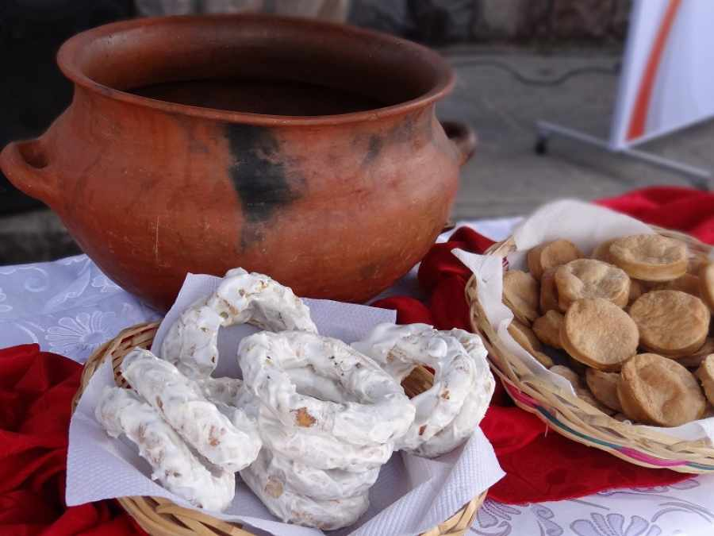
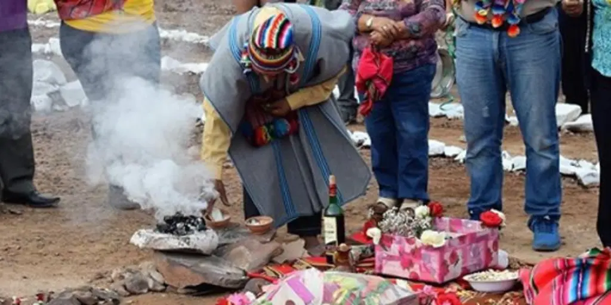
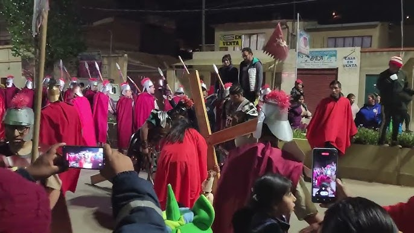

Procesiones Religiosas

La procesión del Viernes Santo en La Paz es una de las más multitudinarias, donde los fieles acompañan al Señor del Gran Poder en un recorrido por el centro histórico.
.jpg)
En Santa Cruz, la procesión del Cristo de los Milagros reúne a miles de devotos que visten túnicas moradas y cargan pesadas cruces.
Alfombras Florales

Las alfombras se elaboran con flores naturales, aserrín teñido y otros materiales naturales, formando diseños religiosos que cubren las calles por donde pasarán las procesiones.
En ciudades como Sucre y Tarija, existen familias que por generaciones se han dedicado a esta tradición, transmitiendo los secretos del oficio.
Costumbres Gastronómicas
El Viernes Santo se observa el ayuno y abstinencia de carne, dando lugar a platos tradicionales como el pescado, la quinua y los dulces típicos.

Los rosquetes, bizcochuelos y empanadas de dulce son preparados especialmente para esta época y compartidos en familia.
Rituales Ancestrales
En algunas comunidades de Potosí se mantiene la tradición del "fuego nuevo", donde se apagan todos los fogones y se enciende uno nuevo con rituales andinos.

La ch'alla o ritual de agradecimiento a la Pachamama se realiza en muchas comunidades combinando elementos católicos y andinos.
Tradiciones por Región

En Oruro se realiza un impresionante Vía Crucis Viviente con más de 200 actores que representan las estaciones del calvario de Cristo.
En las Misiones Jesuíticas de Chiquitos, las celebraciones combinan la música barroca con rituales ancestrales, creando una experiencia única.